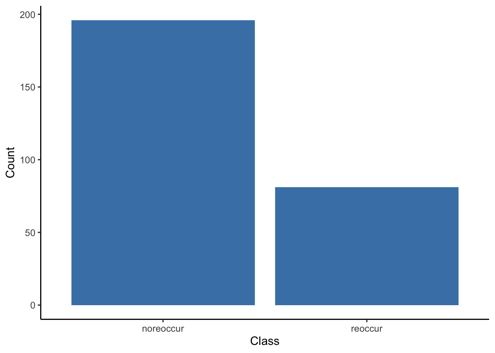

Chapter 5 Reflections
5.1 Data Limitations
5.1.1 Unbalanced Features
The Breast cancer dataset we choose totally has 9 features and we only have 3 continuous variables and the rest 6 features are all categorical. And these continuous variables are represented in range, before building the model, we first need to take random numbers from the related ranges, which could lead a unstable error.
5.1.2 Unbalanced Class
In the original dataset, the number of two classes are not balanced, where we have more class noreoccur than class reoccur, this unbalance can affect the training performance of the model.

5.1.3 Lack of Samples
Our dataset totally has 277 samples, while for machine learning models, these data are far from enough, to have a better performance of training, that’s also why when we find the unbalanced distribution of sample classes, we give up resampling method to train the model to avoid a lack of data.
5.2 Future Improvements
5.2.2 Model Interpretion
I mainly focus on analyzing why lead to this distribution, or why lead to this model performance. While I pay less attention to interpret what the result is. From all the plots we made, we can see all the three models are not that good, and sometimes it’s hard for me to make a clear and efficient conclusion about the specific result, like it’s hard for me conclude how would the recurrence risk change as one feature changed.
In order to better figure out some useful insights with the limited data, survival analysis method would be a good choice. It can better analyze the effect of different features and better predict the change of the risk.